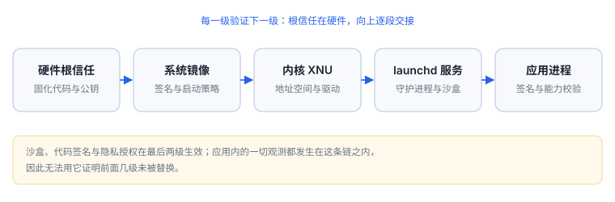
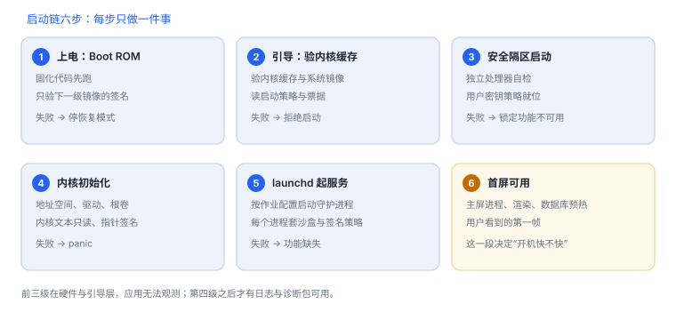

启动链与信任建立
五级验证、个人化票据与系统卷封印，决定了这台设备能运行什么
启动链的核心不是“安全启动”这个词，而是三份数据：被验证镜像的摘要清单、Apple 签发的个人化票据、系统卷的根哈希。理解这三份数据的流转，才能解释“为什么降级装不上”“为什么改一个文件就开不了机”。
场景 按一下电源键，屏幕还黑着，第一级就已经把下一级镜像的签名验完了。等到苹果标志出现，链上已经跑过三棒，你看到的只是第四级的开场。
1. 五级验证：每级只验下一级
| 阶段 | 执行者 | 验证什么 | 失败表现 |
|---|---|---|---|
| 第一级 | 芯片内固化的 Boot ROM | 下一级引导镜像的签名 | 停在恢复 / DFU 模式 |
| 第二级 | 引导程序（iBoot 一类） | 内核缓存、系统镜像、启动策略 | 拒绝启动该镜像，可能循环重启 |
| 第三级 | 安全隔区（独立处理器） | 自身固件与用户密钥策略 | 设备锁定相关功能不可用 |
| 第四级 | 内核 | 地址空间、驱动、根卷 | 内核崩溃（panic） |
| 第五级 | launchd 及其作业 | 可执行文件签名与 entitlement | 进程被拒启动，功能缺失 |


2. 时间预算：上电到桌面各花多久
| 阶段 | 量级 | 为什么是这个量级 |
|---|---|---|
| Boot ROM → 引导 | 数十至数百毫秒 | 只需验签一个镜像并跳转 |
| 引导 → 内核 | 约 1 秒 | 验证并解压内核缓存，初始化硬件 |
| 内核初始化 | 1–3 秒 | 驱动、文件系统、安全策略依次就位 |
| launchd 与系统服务 | 1–2 秒 | 按依赖启动守护进程 |
| 首屏可用 | 数秒 | 主屏进程、渲染、数据库预热 |
这些是量级而非承诺：机型、系统版本、存储状态都会影响结果。价值在于建立“哪一段异常变慢”的直觉，而不是背数字。
真正有用的是分段：如果首屏变慢但内核阶段正常，问题在用户态（服务启动、数据库、渲染）；如果连恢复模式都进不去，问题在前两级。把总时长当成一个数看，几乎定位不到原因。
3. 原理推演：链式信任为什么必然有断点
链式信任的成立条件是“每一级的验证者本身可信”。Boot ROM 由熔丝与硬件保证不可改，所以它能验第二级；第二级验第三级，依此类推。断点只会出现在两种情况：
| 断点类型 | 成因 | 后果 |
|---|---|---|
| 验证者被替换 | 引导镜像被换掉且签名校验被绕过 | 后续每一级都可被替换 |
| 验证逻辑被短路 | 漏洞让校验函数直接返回成功 | 链仍在跑，但不再验 |
| 数据被替换而校验未覆盖 | 某段数据不在摘要范围内 | 局部被改，链依然“通过” |
三种断点的排查成本差别很大。验证者被替换最容易被发现——镜像本身变了，摘要对不上；验证逻辑被短路最难发现，因为清单、签名、版本号全都正常，只是“校验函数返回了 true”；数据未覆盖则介于两者之间，通常要拿同一版本的两台设备逐字节比对才能看出差异。
所以“越狱”不是找到一把万能钥匙，而是找到某一级的断点；而检测方要做的，是判断自己看到的行为是否与“链完整”一致——注意，是“行为一致”，而不是“文件一致”。
4. 一次真实排查记录：卡在恢复模式
- 现象：设备重启后固定进入恢复界面，反复尝试均如此。
- 先分级：这不是应用问题，也不是内核 panic（没有 panic 记录），落在第一、二级。
- 查证据：确认最近是否更换过系统版本或做过恢复；若版本已不在签名范围，个人化票据无法签发。
- 验证假设：换一台同型号设备刷同一版本，若能通过，则问题在本机镜像，而非镜像本身。
- 结论与限制：记录为“镜像与票据不匹配”，并注明该结论只对当前版本与签名状态成立；换一个仍在签名窗口的版本，同样的操作会成功，因此不能推广成“这台设备坏了”。
5. 工程权衡：为什么不要在启动早期加东西
| 做法 | 收益 | 代价 |
|---|---|---|
| 在初始化阶段做检测 | 最早发现异常 | 拖慢启动、易误判、崩溃后难定位 |
| 延后到首屏之后 | 不影响启动体验 | 错过早期路径的观测 |
| 放到后台线程 | 不阻塞主线程 | 与业务初始化竞争资源 |
启动期是最贵的时间
用户对启动的容忍度以秒计，而检测代码一旦抛异常，表现是“开不了机”。宁可延后，也不要在这里做重活。
用户对启动的容忍度以秒计，而检测代码一旦抛异常，表现是“开不了机”。宁可延后，也不要在这里做重活。
6. 可观测面：能看到什么、看不到什么
| 观测 | 能说明 | 不能说明 |
|---|---|---|
| 设置中的版本与型号 | 当前运行的构建 | 镜像是否被替换 |
| 诊断包里的启动日志与 panic | 启动时间线与失败点 | 签名校验的具体判定 |
| 恢复模式提示 | 某一级验证失败 | 是哪一级、为什么 |
| 应用启动即退出 | 签名或能力问题 | 系统镜像的状态 |
7. 动手：把启动时间量出来
本机 macOS 上的启动时间（iOS 需用诊断包）
sysctl -n kern.boottime
uptime
log show --last boot --style compact 2>/dev/null | head -20iOS 上没有等价的公开命令，做法是触发诊断包后取其中的启动日志与时间戳。两者方法不同，但目的相同：把“感觉慢”变成“某段时间被谁占用”。
8. 自测
- 为什么个人化票据能让“同版本镜像”在某些时候装不上？
- 链式信任的三个断点类型中，哪一种最难被发现？为什么？
- 启动时间预算表的正确用法是什么？
- 为什么检测逻辑不适合放在启动早期？